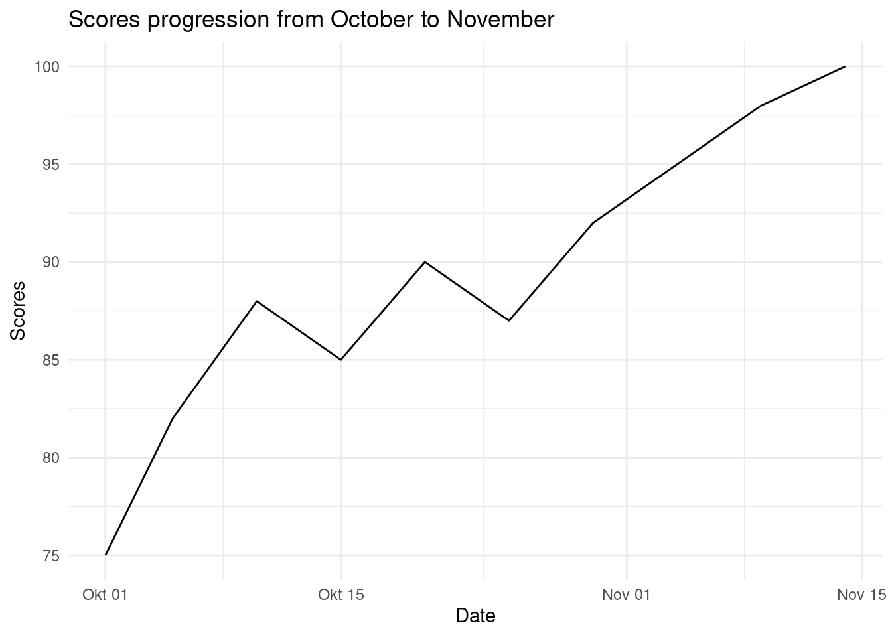

Chapter 4 General Statistics
In this course, we will require the ecommerce data set that can be downloaded from here.
Lets load the data set
## CID TID Gender Age.Group Purchase.Date Product.Category
## 1 943146 5876328741 Female 25-45 30/08/2023 20:27:08 Electronics
## 2 180079 1018503182 Male 25-45 23/02/2024 09:33:46 Electronics
## 3 337580 3814082218 Other 60 and above 06/03/2022 09:09:50 Clothing
## 4 180333 1395204173 Other 60 and above 04/11/2020 04:41:57 Sports & Fitness
## 5 447553 8009390577 Male 18-25 31/05/2022 17:00:32 Sports & Fitness
## 6 200614 3994452858 Male 18-25 12/07/2021 15:10:27 Clothing
## Discount.Availed Discount.Name Discount.Amount..INR. Gross.Amount
## 1 Yes FESTIVE50 64.30 725.304
## 2 Yes SEASONALOFFER21 175.19 4638.992
## 3 Yes SEASONALOFFER21 211.54 1986.373
## 4 No 0.00 5695.613
## 5 Yes WELCOME5 439.92 2292.651
## 6 Yes FESTIVE50 127.01 3649.397
## Net.Amount Purchase.Method Location
## 1 661.004 Credit Card Ahmedabad
## 2 4463.802 Credit Card Bangalore
## 3 1774.833 Credit Card Delhi
## 4 5695.613 Debit Card Delhi
## 5 1852.731 Credit Card Delhi
## 6 3522.387 Credit Card DelhiWe will explore the fundamentals of statistics using the data set that is packed with real-life insights on customers and their purchasing behavior. At the end of this course unit you will be able to understand;
- Measure of spread and central tendency
- Mean(the average)
- Mode
- Quartiles
- Range(IQR, maximum and minimum)
- Standard deviation and variance
- Data Visualizations
- Relationship(scatter plot and heatmaps)
- Trend(line chart)
- Distribution(histograms and density plots)
- Comparison(bar charts)
- Composition (pie charts)
- Outliers (boxplots and violin plots)
- Inferential Statistics
- Hypothesis testing
- T-tests( one sample, anova, chi-square)
4.1 Measure of Spread and Central Tendency
Central tendency identifies the center or typical value of a data set. Measuring central tendency summarizes the data by identifying skewness, distribution and how the data is robust to outliers. Business calculate the central tendencies like average sales, median customer age to make informed decision-making.
Here are some of the statistical concepts used to define central tendecy and spread;
- Mean
- Mode
- Quartiles(Median, upper and lower quartile)
- Range and IQR
- Variance and standard deviation
a.Arithmetic mean
It is also referred to as the average. It is the sum of all values divided by the number of values in the set. R has a function mean to calculate the average.
Here is the formula for mean; \[\overline{x} ={ \sum^{n}_{i=1}x_i\over{n}}\]
Where;
- \(\overline{x}\) is the mean
- \(x_i\) represent value at position \(i\)
- \(n\) is the number(count) of values in a set
Lets calculate the average net amount spent on the ecommerce store.
## [1] 2875.95The average amount spent on the e-commerce store by all the customers was 2875.95 INR.
- Mode
The mode shows the most frequent value, thereby pinpoint the most popular categories in a data set. In the commerce data set we will find the most popular category and age group in the data set.
Find the most popular category
##
## Beauty and Health Books Clothing Electronics
## 8332 2762 10968 16574
## Home & Kitchen Other Pet Care Sports & Fitness
## 5489 2171 1618 5557
## Toys & Games
## 1529## Electronics
## 4- Quartiles
These are values that divide a data set into four equal parts, each representing the 25% of the data points. They help describe the spread of the data, providing insights into the distribution’s shape and spread.
The quartiles are;
- First Quartile(Q1) - The \(25^{th}\) percentile; the value below which 25% of the data falls. Also known as the lower quartile.
- Median(Q2) - Also known as the second quartile; the middle of the data set, where half of the values are above and another half of the values are below.
- Third quartile(Q3) - The \(75^{th}\) percentile; the value below which 75% of the data falls.
Using quartiles, we can calculate the Interquartile Range (IQR), which measures the spread of the middle 50% of the data. \[IQR = Q3 - Q1\]
Try it!
Lets put this into action; we will create a vector ages and calculate the quartiles.
ages <- c(21, 27, 55, 13, 87, 51, 33, 64, 40)
Lets line the ages in an ascending order
ages <- c(13, 21, 27, 33, 40, 51, 55, 64, 87)
Finding the;
- median, will be middle value which is 40.
- Q1, is the median of the lower half which is
Q1 = (21 + 27)/2 = 24- Q3, is the median of the upper half which is
Q3 = (55 + 64)/2 = 59.5Using R to calculate quartiles using the quantile() function;
ages <- c(21, 27, 55, 13, 87, 51, 33, 64, 40)
# Calculate the quartiles
quantile(ages, type=2, probs = c(0.25, 0.5, 0.75))## 25% 50% 75%
## 27 40 55- Range
To understand range, we will define, maximum and maximum values. The maximum value is the largest value in a set while the minimum is the smallest value in a set. Range is the difference between the maximum(largest value) and the minimum value in a set.
Here is a formula for range; \[Range = Max - Min\]
Lets create a vector ages that defines the ages of different customers on a retail stores, find the maximum and minimum ages then calculate the range.
## [1] 87## [1] 13## [1] 74Try it!
Now its clear what range, lets get into the real-world scenario. We will find the maximum and minimum Gross.Amount spent on the ecommerce store. Finally, we calculate the range of amount spent by customers(Gross.Amount)
## [1] 8394.826## [1] 136.4543## [1] 8258.371- Standard deviation and Variance
Variance is statistical measure of dispersion that defines how spread the data points are in a data set in relation to the mean of the data set. Standard deviation is the measure of how data is clustered around the mean. It is simply defined to as the square root of variance.
Here is the formula of variance; \[\sigma = {\sum(x_i - \overline{x})^2 \over{n}}\]
Where;
- \(\sigma\) is the variance
- \(x_i\) is the value
- \(\overline{x}\) is the population mean
- \(n\) is the value count
Standard is simply the square root of variance, Here is the formula for standard deviation; \[S = \sqrt{\sigma}\] or \[S = \sqrt{{\sum(x_i - \overline{x})^2 \over{n}}}\]
Where \(S\) is the standard deviation.
Variance and standard deviation can be calculated in R environment using var() and sd() functions respectively.
Lets create a vector of weights of the athletes in kilograms and calculate the variance and standard deviation.
# Sample vector
athlete_weights = c(55, 76, 52, 68, 71, 63, 58, 52, 85, 96)
# Calculate variance
var(athlete_weights)## [1] 216.7111## [1] 14.72111Lets put into real world practice and calculate variance and standard deviation of net amount spent on the ecommerce store.
## [1] 2979517## [1] 1726.128Practical Exercise
Using the ecommerce data set provided at the beginning of the course, calculate the following metrics for the gross amount with R;
- Mean
- Median and IQR
- Maximum, minimum and range
- Standard deviation and variance.
4.2 Data Visualization
Data visualization is the process of using visual elements like chart, graphs or maps to represent data in a way that is easier to understand.
Luckily, R has a package, ggplot2, specifically designed to create charts and graphs. The package is said to implement the “Grammar of Graphics” that is a conceptual framework for creating graphs by Leland Wilkinson.
The package can be installed by;
install.packages("ggplot2")and once the package is installed it is loaded by;
Lets create simple charts with the ggplot2 package.
- Scatter plots
Scatter plot is used to show the numerical relationship between two or more. Lets create a simple plot.
# Sample data
df <- data.frame(
x = rnorm(100),
y = rnorm(100)
)
# Creating a scatter plot
ggplot(df, # data
aes(x = x, y = y)) + #aesthetics
geom_point() + #geometrics
labs(title = "Scatter Plot Example", x = "X Values", y = "Y Values") +
theme_minimal()
Try it!
Lets make it more interesting by exploring the real world scenario where we will visualize the relationship between Discount and the Net Amount on the ecommerce store.
# Creating a scatter plot
ggplot(ecommerce[1:100, ], # first 100 rows of the data
aes(x = Net.Amount, y = Discount.Amount..INR.)) + #aesthetics
geom_point() + #geometrics
labs(title = "Relationship between Net Amount and the Discount",
x = "Net Amount",
y = "Discount") +
theme_minimal()
The scatter chart above shows that there is no clear relationship between the Net Amount spent and the discount offered since at every spending(low, medium or high) had low or high discount. High spending did not necessarily guarantee low or high discount.
- Line Chart
Line Chart is used to show trend(Growth or fall over time). Let create a simple line chart to show this;
# Sample data
dates <- c("2023-10-01", "2023-10-05", "2023-10-10", "2023-10-15", "2023-10-20", "2023-10-25", "2023-10-30", "2023-11-04", "2023-11-09", "2023-11-14")
scores <- c(75, 82, 88, 85, 90, 87, 92, 95, 98, 100)
# Create a data frame
df <- data.frame(
date = as.Date(dates),
scores = scores
)
# Plot a scatter plot
ggplot(df, # data
aes(x=date, y=scores)) +
geom_line()+
labs(
title = "Scores progression from October to November",
x = "Date",
y = "Scores"
) +
theme_minimal()
There has a been a gradual increase of scores from October to November.
Try it!
Lets put this into a real world scenario. We will plot the Gross Amount spent by Customers over the years at the ecommerce store.
# Convert the purchase date to date type
ecommerce$Purchase.Date <- as.Date(ecommerce$Purchase.Date)
# Plot a scatter plot
ggplot(ecommerce[1:100, ], # data
aes(x=Purchase.Date, y=Gross.Amount)) +
geom_line()+
labs(
title = "Gross Amount spent over time",
x = "Purchase Date",
y = "Gross Amount"
) +
theme_minimal()
There has been gradual spikes of rise and fall of the amount spent on the store.
- Histograms and Density Plots
Histograms and Density plots are used to show the distribution of continuous variables. Histogram is visually similar to the bar chart however it is used show frequency and distribution across a list-like data set(vectors, lists, sets, arrays, etc) that stores continuous numeric values. The count of observation within a certain range of values are displayed.
Lets create a vector of random 100 ages and plot the data to a histogram.
# Generate random 1000 ages between 0 and 100
set.seed(42)
ages <- sample(0:100, 1000, replace = TRUE)
# Create a data frame to use with ggplot
age_data <- data.frame(Age = ages)
# PLOTTING
# Create the histogram using ggplot
ggplot(age_data, aes(x = Age)) +
geom_histogram(binwidth = 5, fill = "blue", color = "black") +
labs(
title = "Histogram of Randomly Generated Ages",
x = "Age",
y = "Frequency") +
theme_minimal()
The bins are groups of ages ranging 5 years
Try it!
Lets put his into action and plot the distribution of Discount offered on the ecommerce store
# Create the histogram using ggplot
ggplot(ecommerce,
aes(x = Discount.Amount..INR.)) +
geom_histogram(bins = 10, fill = "blue", color = "black") +
labs(
title = "Histogram of Discount offered",
x = "Discount",
y = "Frequency") +
theme_minimal()
The distribution is right skewed and most of the customers in the store were offered very low discount for their purchases.
Check it later and speak about density plots
- Bar Charts
Bar charts are used to represent both categorical and numeric data in form of rectangular bars. The length/height of each category represents its numeric value. It may corresponds to either length, count, age or any other numerical value. Bar charts are used when;-
- Comparing categorical data
- Visualizing summarized data for instance aggregated sum, average or any other summary statistics.
- Showing frequency or count for instance representing the number of products sold per each category.
- Ranking data. Bar charts can effectively represents ranks especially in descending/ascending order for instance ranking the life expectancy of different countries.
- Other type of complex bar charts like stacked bar charts can be used to compare part-to-whole relationships.
There are many more uses of bar charts however there are some use cases where bar charts are not preferred like when working with continuous data, scatter and line charts are more befitting. Also, bar charts are not appropriate where data has too many categories, heatmaps will do better.
To create a simple bar chart using ggplot2, we use geom_bar to define that its a bar chart.
# Sample data
df <- data.frame(
category = c("A", "B", "C", "D"),
value = c(23, 17, 35, 10)
)
## The data set above will be used to create a bar chart
# Creating a bar chart
ggplot(df,
aes(x = category, y = value)) +
geom_bar(stat = "identity") +
labs(
title = "Value by Category",
x = "Category",
y = "Value") +
theme_minimal()From the bar chart above, Category “C” has the largest value while category “D” has the lowest value.
Try it!
Lets create a bar chart of a real world scenario. We will calculate the average Gross amount spent by different age groups in the ecommerce store.
library(plyr)
# Aggregate by mean
PurchasebyAge <- aggregate(Gross.Amount ~ Age.Group,
data = ecommerce,
FUN = mean
)
# Plot a bar chart
ggplot(PurchasebyAge,
aes(x = Age.Group, y = Gross.Amount)) +
geom_bar(stat = "identity", fill="blue", color="white") +
labs(
title = "Average Gross Amount by Age Group",
x = "Age Group",
y = "Average Gross Amount") +
theme_minimal()
All the age group had an almost equal average spending on the ecommerce store.
What if we calculated the total spending for each age group? That would be interesting! Lets calculate and plot a bar chart to represent that.
# Aggregate by sum
PurchasebyAge <- aggregate(Gross.Amount ~ Age.Group,
data = ecommerce,
FUN = sum
)
# Plot a bar chart
ggplot(PurchasebyAge,
aes(x = Age.Group, y = Gross.Amount)) +
geom_bar(stat = "identity", fill="blue", color="white") +
labs(
title = "Total Gross Amount by Age Group",
x = "Age Group",
y = "Total Gross Amount") +
theme_minimal()
Age 25 - 45 had the highest total spending in the ecommerce store while age of 60 and above had the least total spending.
- Boxplots and Violin Plots
Box plot is a type of chart that uses boxes and lines to show distributions of one or more groups of a continuous numeric data. They provide a high-level information at a glance for instance the data symmetry, skew and variance. They can also be used to show outliers within a data set. This is the only chart that can effectively give the measure of spread and central tendency(median, quartiles and range).
Try it!
We will plot a boxplot of the Net Amount spent on the ecommerce store.

The upper and lower boundaries represents the upper(Q3) and lower(Q1) quartiles respectively. In out case the upper quartile is about 4200INR and the lower quartile is approximately 1500. The median is represented by the line cutting through the box, whereby in our case is approximately 2800 INR. The maximum value is the uppermost point of the boxplot which is approximately 8300INR. Finally, the minimum is the bottom of the plot which is approximately 350INR.
Practical Exercise
To enhance your understanding in basic data visualizations, you will be required to use the inbuilt diamonds data set and follow the instructions below.
- Plot a bar chart to show the count of diamonds by
cutquality. - Generate a scatter plot to show the relationship between
caratandprice. - Plot a histogram of the
priceof diamonds. - Create a boxplot to compare the price distributions across different different diamond
colorcategories. - Visualize the male and female passengers in each class.
Hint: The titanic data set is loaded as below
data("diamonds")4.3 Inferential Statistics
4.3.1 Introduction to Hypothesis Testing
4.3.1.1 Concept of Hypothesis Testing
Hypothesis testing is a type of statistical analysis that is used to make assumptions of a population based on a sample of data. It is particularly used to find the relationship between two variables(populations). A real life example of hypothesis testing is that a teacher may assume that 60% of the students come from a middle-class family. There are two types of hypothesis;
- Null hypothesis(\(H_0\))
- Alternate hypothesis (\(H_1\) or \(H_a\))
Null hypothesis is states that there is no effect or no difference(\(\mu = 0\)). For instance there is no effect of standards of living to college admissions. Alternate hypothesis is the opposite and contradicts the null hypothesis. It provide evidence for what the statistician is trying to find(\(\mu \neq 0\)). In this case, the standards of living have an effect on college admissions.
The important aspects before conducting hypothesis testing are;-
- Significance level. It is the probability of rejecting the null hypothesis when it is actually true.
- P-Value is the probability of obtaining a test statistic at least as extreme as the one observed, given the null hypothesis is true. Most hypothesis testing projects are set at 0.05. Less than 0.05(or the set value) indicates the null the test is statistically significant and the null hypothesis should be rejected. Otherwise, the test is statistically insignificant and the null hypothesis is not rejected.
- Test statistic also called T-statistic is a standardized value calcluated during a hypothesis test. It cab z-test or a t-test. -Decision rule is based on the calculated p-value and the significant level. In a hypothesis test where the significant and the p-value is 0.03444 the null hypothesis is not rejected.
Now that you are familiar with the hypothesis testing aspects, take the following steps to perform hypothesis testing;-
- Formulating the hypothesis by defining the null and alternate hypothesis.
- Collect and analyze the data.
- Choose a significant level(\(a\)) and calculate the p-value.
- Make a decision by comparing the p-value to the significant level.
- Conclude your analysis results.
4.3.1.2 T-tests
- One-Sample t-test
One sample t-test is a statistical method used to find if the mean of a sample is different from the population(or preassumed) mean.
It is based on the t-distribution(most observations fall close to the mean, and the rest of the observations make up the tails on either side) and is commonly used when dealing with small sample sizes. One sample t-test is especially performed where the population standard deviation is unknown.
Below is the formula for one sample t-test \[t={{\overline{X}-\mu}\over s / \sqrt{n}}\]
where;
- \(t\): the one sample t-test value. t-test statistic
- \(n\): the number of the observations in the sample
- \(\overline{X}\): is the sample mean
- \(s\): standard deviation of the sample
- \(\mu\): Hypothesized population mean
The result \(t\), simply measures how many standard errors the sample mean is away from the hypothesized population mean.
Before conducting t-test, there is a need to establish the null(H0) and alternate hypothesis(Ha) where;
- Null Hypothesis(H0): There is no significant difference between the sample mean and the population(hypothesized) mean.
- ALternate Hypothesis(Ha): There is a significant difference between the sample mean and the population mean.
P-value is the probability value that tells you how likely is that your data could have occurred under null hypothesis. In our case a p-value of below 0.05 is considered to be statistically significant and the null value is rejected. The vice versa is true
Lets perform a t-test using R;
We will generate sample data
# Set seed for reproducibility
set.seed(123)
# Generate random student marks (out of 100)
student_marks <- rnorm(30, mean = 65, sd = 10)
# Display the first few marks
head(student_marks)## [1] 59.39524 62.69823 80.58708 65.70508 66.29288 82.15065Perform the t-test
# Conduct one-sample t-test
t_test_result <- t.test(student_marks, mu = 70)
# Display the t-test result
print(t_test_result)##
## One Sample t-test
##
## data: student_marks
## t = -3.0546, df = 29, p-value = 0.004797
## alternative hypothesis: true mean is not equal to 70
## 95 percent confidence interval:
## 60.86573 68.19219
## sample estimates:
## mean of x
## 64.52896Practical exercise
Conduct one sample t-test on the sepal length of the setosa iris. The pre-assumed mean is 5.84 units.
- Two-Sample t-test
Unlike one sample t-test where a sample population is tested against a pre-assumed mean, the Tow-sample t-test determines if there is a significant difference between the means of two independent populations.
The practical application of two-sample t-test can be when comparing the test scores of two classes. This helps the statistician to understand if one class did better than the other one or it’s just a matter of luck.
These are the prerequisites before conducting a two-sample t-test;
- The groups contain separate data with a similar distribution.
- The two populations have a normal(typical bell-curve) distribution.
- The two sample populations have a similar variations
The two sample t-test is calculated by;

Where;
- \(\overline{x}_1\) and \(\overline{x}_2\) are the mean of the first sample and the second sample respectively
- \(s_{1}\) and \(s_{2}\) are the standard deviation of sample 1 and sample 2 respectively
- \(n_1\) and \(n_2\) are the sample sizes of the first and second sample respectively.
Let create a random population of student scores for two classes and perform two-sample t-test in R;
# Generate the population sample
set.seed(123)
group_A_scores <- rnorm(25, mean = 75, sd = 8) # Group A
group_B_scores <- rnorm(25, mean = 80, sd = 10) # Group B
# Display the first few scores of each group
head(group_A_scores)## [1] 70.51619 73.15858 87.46967 75.56407 76.03430 88.72052## [1] 63.13307 88.37787 81.53373 68.61863 92.53815 84.26464Performing the two sample t-test. Lets set the confidence level to 95%(0.95)
ttest_result = t.test(group_A_scores, group_B_scores,
alternative = "two.sided", mu = 0, paired = FALSE,
var.equal = FALSE, conf.level = 0.95)
ttest_result##
## Welch Two Sample t-test
##
## data: group_A_scores and group_B_scores
## t = -2.6403, df = 46.312, p-value = 0.01125
## alternative hypothesis: true difference in means is not equal to 0
## 95 percent confidence interval:
## -11.080984 -1.495049
## sample estimates:
## mean of x mean of y
## 74.73336 81.02137- t-value = -2.6403: This indicates the difference between the means of the two groups, in terms of standard errors. A higher absolute value suggests a larger difference.
- Degrees of freedom (df) = 46.312: This reflects the sample size and variability in the data.
- p-value = 0.01125: Since the p-value is less than 0.05, we reject the null hypothesis. This suggests that the difference in means between Group A and Group B is statistically significant.
- 95% confidence interval: (-11.08, -1.50): This indicates that we are 95% confident that the true difference in means lies between -11.08 and -1.50.
- Mean of x (Group A) = 74.73, Mean of y (Group B) = 81.02: The average score of Group B is higher than Group A.
In summary, the test shows a significant difference between the means of the two groups, with Group B having higher scores
Practical exercise
Using the iris data set, compare the petal length of the versicolor and virginica species using two-sample t-test. Interpret the results
4.3.1.3 ANOVA (Analysis of Variance)
ANOVA is a statistical test used to analyze the difference between the means of more than two groups. This is different from the ttest that analyzes one or two groups, it uses F test to find the statistical significance. Multiple means are compared at once and if one mean is different the hypothesis is rejected.
The F test compares the variance in each group from the overal group variance.
An practical example of ANOVA is where a farmer wants to test the effect of three different fertilizers on the crop yield. The difference in the crop yield will be calculated.
Before conducting ANOVA, the following assumptions are made;
- Independence of observations: the data was collected using statistically valid sampling methods and there are no hidden relationships among the observations.
- Normal distribution: the dependent variable should follow a normal distribution.
- Homogeinity of variance: All the groups being tested should have similar variations.
Lets calculate the ANOVA using the the crop yield data set. The fertilizer are in three categories; 1, 2 and 3
# Load the data set
crop_df <- read.csv("data/cropdata.csv")
head(crop_df) # view the first few rows of the data set## density block fertilizer yield
## 1 1 1 1 177.2287
## 2 2 2 1 177.5500
## 3 1 3 1 176.4085
## 4 2 4 1 177.7036
## 5 1 1 1 177.1255
## 6 2 2 1 176.7783## Call:
## aov(formula = yield ~ fertilizer, data = crop_df)
##
## Terms:
## fertilizer Residuals
## Sum of Squares 5.74322 36.21101
## Deg. of Freedom 1 94
##
## Residual standard error: 0.6206638
## Estimated effects may be unbalancedThe ANOVA output provides insights into the variation in crop yield explained by the fertilizer type. Here’s a detailed breakdown of the results:
Sum of Squares (fertilizer) = 5.74322: This value represents the variation in crop yield that can be attributed to the different types of fertilizers used in the experiment. In this case, 5.74322 units of the total variation are explained by fertilizer differences.
Sum of Squares (Residuals) = 36.21101: This is the unexplained variation in crop yield, also known as the error term. This shows how much of the variation is due to factors not accounted for in the model, such as environmental factors or random error.
Degrees of Freedom (fertilizer) = 1: There is only 1 degree of freedom for the fertilizer factor, which means there was a comparison between two groups (likely two fertilizer types or one fertilizer versus a control).
Degrees of Freedom (Residuals) = 94: There are 94 degrees of freedom associated with the residuals. This is related to the total number of observations minus the number of groups being compared. In this case, the large degrees of freedom indicate a sizable data set.
Residual Standard Error = 0.6206638: This value represents the typical deviation of the observed yield values from the predicted values, given the current model. A lower residual standard error suggests a better fit of the model to the data, though this value needs to be interpreted in context.
The results show that the fertilizer type explains some of the variation in crop yield (Sum of Squares = 5.74322), while a larger portion remains unexplained (Sum of Squares of Residuals = 36.21101). To fully interpret the significance of this effect, a p-value and F-statistic would typically be calculated, but these are not provided here. Additionally, the residual standard error (0.6206638) gives an indication of the spread of the data around the predicted values, but more information would be needed to assess the strength of the model’s fit.
In conclusion, while the fertilizer has some effect on crop yield, the overall variability and potential unbalanced data need further exploration for a complete understanding.
Practical exercise
Perform ANOVA on the sepal width of the three species in the iris data set and interpret the results.
4.3.1.4 Chi-Square Test
This is a statistical test that determines the difference between the observed and the expected data. It determines if the relationship between two categorical variables is due to chance or a relationship between them.
It is calculated by; \[x_{c}^{2} = \frac{\sum(O_{i}-E_{i})}{E_i}\]
Where;
- \(c\) is the degree of freedom. This is a statistical calculation that represents the number of variables that can carry and is calculated to ensure the chi-square tests are statistically valid
- \(O\) is the observed value
- \(E\) is the expected value
Lets perform Chi-square on a survey data from the MASS library. The survey data represents data from a survey conducted on students.
- Null Hypothesis (\(H_0\)): The smoking habit is independent of the student’s exercise level
- ALternate Hypothesis (\(H_a\)): The smoking habit is dependent on the exercise level.
Load the data
##
## Attaching package: 'MASS'## The following object is masked from 'package:dplyr':
##
## select## Sex Wr.Hnd NW.Hnd W.Hnd Fold Pulse Clap Exer Smoke Height M.I
## 1 Female 18.5 18.0 Right R on L 92 Left Some Never 173.00 Metric
## 2 Male 19.5 20.5 Left R on L 104 Left None Regul 177.80 Imperial
## 3 Male 18.0 13.3 Right L on R 87 Neither None Occas NA <NA>
## 4 Male 18.8 18.9 Right R on L NA Neither None Never 160.00 Metric
## 5 Male 20.0 20.0 Right Neither 35 Right Some Never 165.00 Metric
## 6 Female 18.0 17.7 Right L on R 64 Right Some Never 172.72 Imperial
## Age
## 1 18.250
## 2 17.583
## 3 16.917
## 4 20.333
## 5 23.667
## 6 21.000Create a contigency table between the Smoke and the Exercise leel.
# Create a contingency table with the needed variables.
stu_data = table(survey$Smoke,survey$Exer)
print(stu_data)##
## Freq None Some
## Heavy 7 1 3
## Never 87 18 84
## Occas 12 3 4
## Regul 9 1 7Perform the chi-square test on the stu_data, the contigency table.
##
## Pearson's Chi-squared test
##
## data: stu_data
## X-squared = 5.4885, df = 6, p-value = 0.4828From the results, the p-value is 0.4828 which is greater than 0.05 therefore the null hypothesis is not rejected. It’c concluded that the smoking habit is independent of the exercise level since there is weak to now correlation between the Smoke and Exer variables.
Finally, lets visualize the results from the contigency table;
# Visualize the data with a bar plot
barplot(stu_data, beside = TRUE, col = c("lightblue", "lightgreen"),
main = "Smoking Habits vs Exercise Levels",
xlab = "Exercise Level", ylab = "Number of Students")
# Add legend separately
legend("center", legend = rownames(stu_data), fill = c("lightblue", "lightgreen"))
You can see from the table, those students who never smoke lead in every exercise level while the heavy smokers are the least in every group.
Practical exercise
Using the Iris data set, perform a Chi-square test to determine if there is a relationship between two categorical variables: the species (Species) and a new categorical variable that classifies sepal width (Sepal.Length) into categories (e.g., “Short”, “Medium”, “Long”).
- “Short”: below 3.0
- “Medium”: above 3.0 to 3.8
- “Long”: above 3.8
Follow the steps below;
- Create a new variable
sepal.Width.Categoryin the data set by categorizing the Sepal.Width variable into 3 categories:"Short","Medium", and"Long"(as per the defined ranges). - Perform a Chi-square test to see if there’s an association between the new
sepal.Width.Categorycategories and theSpeciescolumn. - Interpret the results of the Chi-square test
4.4 Hands-on Exercise
You are required to download the Groundhog Day Forecasts and Temperatures data set from here.
- Perform one sample t-test on February Average temperature. The pre-assumed mean is 35
- Conduct two sample t-test between the North East average temperature for March and the overall March daily temperature
- Perform ANOVA between the presence of Punxsutawney Phil and the February average temperature
Interpret the results